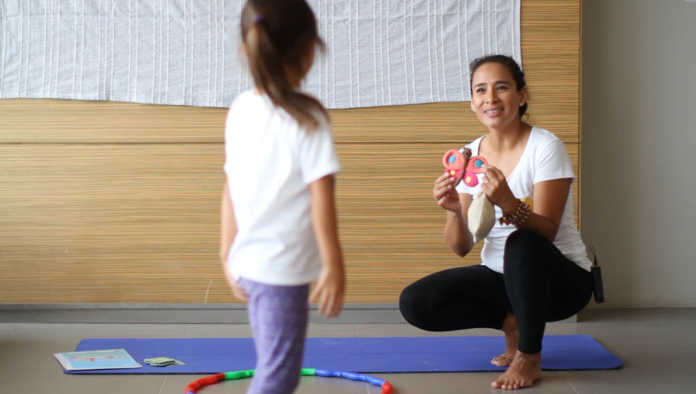

Un discurso es muy fácil de sostener mediante el canal de expresión que más utilizamos, el lenguaje verbal. La responsabilidad radica en mantener aquel mensaje que entregamos, que proyectamos y que compartimos con nuestros niños, niñas y pares de manera consecuente en el día a día, mediante acciones concretas.
Si hemos decidido acompañar el proceso de desarrollo de la infancia, aportando y colaborando en el desde la transformadora disciplina del yoga, es pertinente reflexionar sobre la responsabilidad que se teje entre nuestras manos.
La importancia emerge de la veracidad que ante todo, nos debemos a nosotros/as mismos y que por consecuencia brindaremos a la comunidad infantil que nos interesa cuidar y proteger. Si somos capaces de sostener aquella verdad, toda nuestra transmisión estará teñida del mismo color. El camino que tengamos para cuidarnos, para escucharnos, para atendernos, para respetarnos, se verá reflejado en las acciones que levantemos y ejecutemos junto a ellos y ellas.
¿Cómo podemos hacerlo? ¿Cómo cuidar de ello?
- El compartir el yoga con la infancia, nos compromete a practicar con regularidad y conocer la disciplina desde lo teórico y lo práctico. Para educar y trascender, es preciso que pase por nosotros mismos primero. Por esto, se requiere asistir a clases constantemente.
- Si vamos a iniciar el interés por la comida saludable, es imprescindible ante todo hacerlo con nosotros y revisar la manera de nutrirnos.
- Si por medio de nuestras prácticas nos mueve la atención hacia el fomento del trabajo colaborativo, ese tan nombrado trabajo en equipo, es indispensable visualizar la manera de relacionarnos con nuestros pares en contextos labores. Así podremos identificar cómo enfrentamos a los otros/as, pudiendo determinar nuestra fortalezas y debilidades.
- Para poder transmitir el valor de la escucha en ellos/as, es de suma responsabilidad conocer el cómo lo integramos en nuestra vida: ¿nos escuchamos, escuchamos a los demás, cómo escuchamos?
- El lenguaje es poderoso en todas sus dimensiones y en ello se ancla la consciencia en todas las aristas. La forma de comunicarnos con ellas/os, es la que mantendremos según cómo nos comunicamos con nosotras/os mismos y nuestros pares. Aquí podemos reflexionar sobre el subestimar sus capacidades y no hablarles de manera caricaturizada, pensando que porque son niños o niñas, debemos expresarnos como dibujos animados.
- Es fundamental considerar la continuidad y regularidad en el trabajo con y para la infancia. Si la decisión es nutrir dicha comunidad, otro de nuestros compromisos es siempre estar en acción, para así seguir aprendiendo mediante la experiencia, la práctica. Los supuestos, las reflexiones desde los libros, los estudios, sólo toman valor cuando son integrados con la vivencia.
- El querer compartir la caja de herramientas que nos entrega el yoga con los niños/as y sus familias, es el motor para saber utilizar esa caja con nosotras/os mismos primero, siendo capaces de auto-regularnos, de conocer nuestras emociones, de tolerar la frustración, ser pacientes, etc.
Estos son sólo algunos ejemplos de la cuidadosa labor que debemos sostener día a día, por ello el trabajo no sólo es cuando nos disponemos a un grupo infantil para compartir una práctica de yoga, sino en cada momento de nuestras vidas. Cada experiencia es un escenario de aprendizaje, de consciencia pura, de transformación, de evolución.